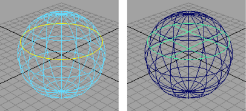

“平面”操作可以在曲线内创建平坦的修剪 NURBS 曲面。
- 选择闭合的平面曲线或形成闭合平面区域的多条曲线。
可以通过重叠，选择形成闭合区域的多条曲线。这些曲线并不需要端到端连接。

- 选择。 
注释
- 可以使用“保持外部”(Keep Outside)属性创建带有封闭区域切割洞的修剪曲面，而不是封闭区域内的修剪曲面。
- 可以编辑输入曲线，更改曲面的形状，但曲面必须保持为平面。
- 虽然平面曲面可以包含切割区域和洞，但是即使所有曲线显示为创建了曲面单个部分，所有曲线仍必须共面。
“平面”操作可以在曲线内创建平坦的修剪 NURBS 曲面。
可以通过重叠，选择形成闭合区域的多条曲线。这些曲线并不需要端到端连接。